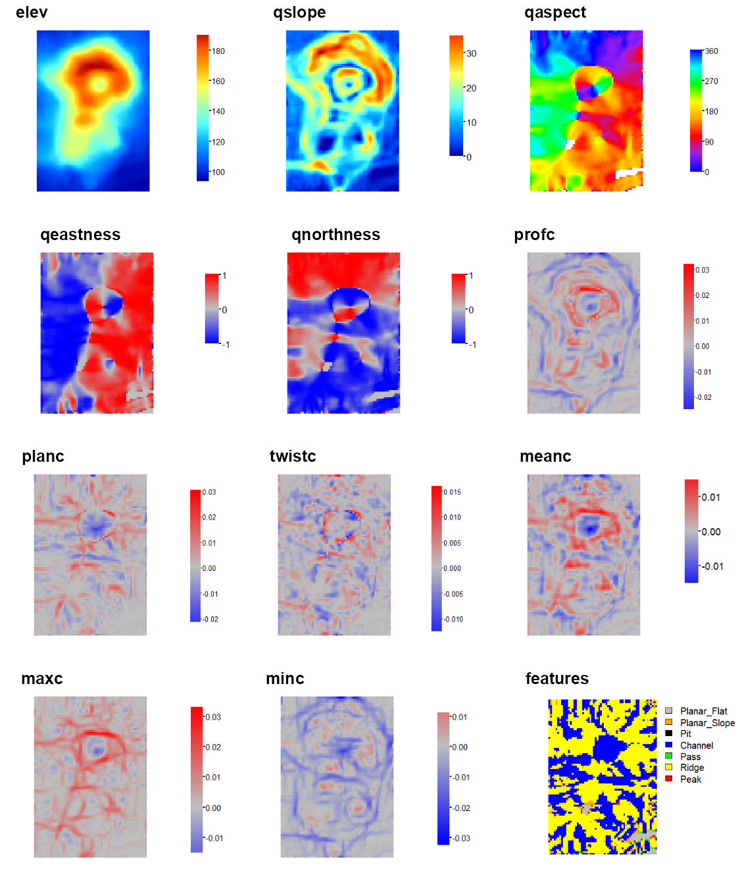

MultiscaleDTM
Please cite as
Ilich, A. R., Misiuk, B., Lecours, V., & Murawski, S. A. (2023). MultiscaleDTM: An open-source R package for multiscale geomorphometric analysis. Transactions in GIS, 27(4). https://doi.org/10.1111/tgis.13067
Purpose
This R package calculates multi-scale geomorphometric terrain attributes from regularly gridded digital terrain models (DTM; i.e. elevation or bathymetry rasters) via a specified window as described in Ilich et al. (2023).

Figure adapted from Wilson et al. (2007)
Install and Load Package
The package can be installed from CRAN using install.packages("MultiscaleDTM") or the development version can be installed from github using the code remotes::install_github("ailich/MultiscaleDTM"). If you are using Windows, you may need to install Rtools using the instructions found here). To install from github you must already have the remotes package installed, which can be installed using install.packages("remotes")
This package relies on the terra package for handling of spatial raster data.
Main Functions
Slope, Aspect and Curvature
SlpAspcalculates multi-scale slope and aspect according to Misiuk et al (2021) which is a modification of the traditional 3 x 3 slope and aspect algorithms (Fleming and Hoffer, 1979; Horn et al., 1981; Ritter, 1987). This algorithm only considers a subset of cells within the focal window, specifically the four cells on the edge of the focal window directly up, down, left, and right of the focal cell for the “rook” case and an additional four corner cells for the “queen” case.
Qfitcalculates slope, aspect, curvature, and morphometric features by fitting a quadratic surface to the focal window using ordinary least squares using the equation shown below where a-f are regression parameters, Z is the elevation/depth, X is the east/west coordinates in the focal window relative to the focal cell, and Y is the north/south coordinates in the focal window relative to the focal cell (Evans, 1980; Wilson et al., 2007; Wood, 1996). The morphometric features algorithm has been modified to use more robust measures of curvature based on the suggestions of Minár et al. (2020).
Z = aX2 + bY2 + cXY + dX + eY + f

Figure adapted from Walbridge et al., (2018)
Roughness
-
VRM- Vector ruggedness measure (Sappington et al. 2007) quantifies roughness by measuring the dispersion of vectors normal to the terrain surface. This is accomplished by calculating the local (3 x 3 cell) slope and aspect, and constructing unit vectors normal to each cell in the DTM. These unit vectors are then decomposed into their corresponding x, y, and z components (i.e. the x, y, and z coordinates of the head of the vector relative to its origin) and used in the following equation (note: N is the number of cells in the window). VRM ranges from zero to one, representing completely smooth to rough surfaces, respectively. .

Figure adapted from Sappington et al. (2007)

Figure adapted from Habib (2021)
$$ \text{VRM} = 1- \frac{\sqrt{\bigg(\sum x\bigg)^2+\bigg(\sum y\bigg)^2+\bigg(\sum z\bigg)^2}}{N} $$
x = sin(slope) * sin(aspect)
y = sin(slope) * cos(aspect)
z = cos(slope)
-
SAPA- Calculates the Surface Area to Planar Area (Jenness, 2004). Rougher surfaces will have a greater surface area to planar area ratio, and perfectly smooth surfaces will have a value of 1. This is a 3D analog to the classical “chain-and-tape” method, which calculates roughness as the ratio of the contoured distance (chain length) and linear distance (tape measure distance; Risk, 1972). Additionally, planar area can be corrected for slope by dividing the product of the x and y resolution by the cosine of slope (Du Preez 2015). The metric by Jenness (2004) and De Preez (2015) works at the per cell level (1x1 cell). This function generalizes this method to multiple scales by summing the surface areas within the focal window and adjusting the planar area of the focal window using multi-scale slope (Ilich et al., 2023).-
SurfaceArea- Calculate the surface area of each grid cell (Jenness, 2004). This is accomplished by connecting a focal cell to its immediate neighbors to create 8 large triangles. These large triangles are then trimmed back to the extent of the focal cell using the principle of similar triangles, and then the area of those 8 smaller triangles are calculated and summed to estimate the surface area of the focal pixel. This is used withinSAPA.
-

Figure adapted from Friedman et al. (2012) and created with BioRender.com.

Figure adapted from Jenness (2004)
-
AdjSD- This roughness metric modifies the standard deviation of elevation/bathymetry to account for slope (Ilich et al., 2023). It does this by first fitting a plane to the data in the focal window using ordinary least squares, and then extracting the residuals, and then calculating the standard deviation of the residuals within the focal window.

-
RIE- Calculates the Roughness Index-Elevation which quantifies the standard deviation of residual topography (Cavalli et al., 2008). This measure is conceptually similar toAdjSDbut rather than fitting a plane and extracting residuals for the entire focal window, residual topography is calculated as the focal pixel minus the focal mean. Then the local standard deviation is calculated from this residual topography using a focal filter.

Figure adapted from Cavalli et al. (2008)
Relative Position
Relative position represents whether an area is a local high or low in relation to a reference height. It is calculated as the value of the focal cell minus the value of a reference elevation which is often the mean of included values in the focal window but could also be other functions such as the median, min, or max of included values. Positive values indicate local topographic highs and negative values indicate lows.Relative Position can be expressed in units of the input DTM raster or can standardized relative to the local topography by dividing by the standard deviation or range of included elevation values in the focal window.
RelPos- A flexible and general purpose function to calculate relative position using a rectangular, circular, annulus, or custom shaped focal window and various functions of the included values as the reference height All other relative position functions are calls toRelPoswith different default parameter values.TPI- Topographic Position Index (Weiss, 2001) is the difference between the value of a focal cell and the mean of the surrounding cells (i.e. the central cell is excluded from focal opertaions) within a rectangular or circular focal window.DMV- Difference from Mean Value (Lecours et al., 2017; Wilson, and Gallant, 2000) is the difference between the value of a focal cell and the mean of all cells (i.e. including the focal cell) in a rectangular or circular focal window.BPI- Bathymetric Position Index (Lundblad et al., 2006) is the difference between the value of a focal cell and the mean of the surrounding cells contained within an annulus shaped window. Since an annulus shaped window is used, it requires an inner and outer radius to be specified. Although the name contains “bathymetric,” that is due to the context in which it was proposed, and is equally applicable to terrestrial elevation data.

Examples of different focal window shapes. Shown are a 13 x 13 cell rectangular window (left), a circular window with a radius of six cells (center), and an annulus window with an inner radius of four cells and an outer radius of six cells (right).
Tutorial
In this tutorial we will calculate most terrain attributes using a 5 x 5 cell rectangular window; however, any rectangular odd numbered window size could be used. Window size is specified using the w parameter. Rectangular window sizes are specified with a vector of length 2 as c(n_rows, n_cols). If a single number is provided it will be used for both the number of rows and columns. Functions that calculate relative position currently support other focal window shapes. In those examples, we will additionally calculate the measures using a circular focal window with a radius of 2 cells, an annulus window with an inner radius of 4 and an outer radius of 6 cells, and a custom focal window. Circular windows are specified by a single number representing the radius, annulus windows are specified with a vector of length 2 of c(inner_radius, outer_radius), and custom windows are specified by a matrix with values showing which data to include (1’s) and which data to exclude (NA’s).
Load packages
library(MultiscaleDTM) #Load MultiscaleDTM packageSee package help page
help(package="MultiscaleDTM")Read in Data
Typically raster data would be loaded into R via terra package’s rast function. We will use instead load a georeferenced version of R’s built in volcano data set using the erupt function.
r<- erupt()Slope, Aspect, and Curvature
slp_asp<- SlpAsp(r = r, w = c(5,5), unit = "degrees", method = "queen", metrics = c("slope", "aspect", "eastness", "northness"), na.rm=TRUE)
qmetrics<- Qfit(r, w = c(5,5), unit = "degrees", metrics = c("elev", "qslope", "qaspect", "qeastness", "qnorthness", "profc", "planc", "twistc", "meanc", "maxc", "minc", "features"), na.rm = TRUE)
To explore these measures in an interactive environment use explore_terrain() or go to this website


Relative Position
Note, the “s” at the start of some names indicates the attribute has been standardized based on local topography.
rp<- RelPos(r, w=matrix(data = c(1,NA,1), nrow = 3, ncol=3), shape = "custom", fun = "median", na.rm = TRUE)
dmv<- DMV(r, w=2, shape= "circle", na.rm = TRUE, stand="range")
Circle and annulus windows for can be specified in either cell units (number of raster cells) or in map units (e.g. meters) which can be useful if your x and y resolutions are not equal. Additionally, the function circle_window and annulus_window can be used to verify that you are specifying your window correctly (NA’s are excluded cells and 1’s are included cells) and can be directly supplied to the w argument instead.
annulus_window(radius = c(4,6), unit = "cell")## [,1] [,2] [,3] [,4] [,5] [,6] [,7] [,8] [,9] [,10] [,11] [,12] [,13]
## [1,] NA NA NA NA NA NA 1 NA NA NA NA NA NA
## [2,] NA NA NA 1 1 1 1 1 1 1 NA NA NA
## [3,] NA NA 1 1 1 1 1 1 1 1 1 NA NA
## [4,] NA 1 1 1 NA NA NA NA NA 1 1 1 NA
## [5,] NA 1 1 NA NA NA NA NA NA NA 1 1 NA
## [6,] NA 1 1 NA NA NA NA NA NA NA 1 1 NA
## [7,] 1 1 1 NA NA NA NA NA NA NA 1 1 1
## [8,] NA 1 1 NA NA NA NA NA NA NA 1 1 NA
## [9,] NA 1 1 NA NA NA NA NA NA NA 1 1 NA
## [10,] NA 1 1 1 NA NA NA NA NA 1 1 1 NA
## [11,] NA NA 1 1 1 1 1 1 1 1 1 NA NA
## [12,] NA NA NA 1 1 1 1 1 1 1 NA NA NA
## [13,] NA NA NA NA NA NA 1 NA NA NA NA NA NA
## attr(,"unit")
## [1] "cell"
## attr(,"scale")
## [1] "4x6"
## attr(,"shape")
## [1] "annulus"
bpi2<- BPI(r, w = annulus_window(radius = c(4,6), unit = "cell"), stand= "sd", na.rm = TRUE) # equivalent to BPI code from earlierReferences
Cavalli, M., Tarolli, P., Marchi, L., Dalla Fontana, G., 2008. The effectiveness of airborne LiDAR data in the recognition of channel-bed morphology. CATENA 73, 249–260. https://doi.org/10.1016/j.catena.2007.11.001
Du Preez, C., 2015. A new arc–chord ratio (ACR) rugosity index for quantifying three-dimensional landscape structural complexity. Landscape Ecol 30, 181–192. https://doi.org/10.1007/s10980-014-0118-8
Evans, I.S., 1980. An integrated system of terrain analysis and slope mapping. Zeitschrift f¨ur Geomorphologic Suppl-Bd 36, 274–295.
Fleming, M.D., Hoffer, R.M., 1979. Machine processing of landsat MSS data and DMA topographic data for forest cover type mapping (No. LARS Technical Report 062879). Laboratory for Applications of Remote Sensing, Purdue University, West Lafayette, Indiana.
Friedman, A., Pizarro, O., Williams, S.B., Johnson-Roberson, M., 2012. Multi-Scale Measures of Rugosity, Slope and Aspect from Benthic Stereo Image Reconstructions. PLOS ONE 7, e50440. https://doi.org/10.1371/journal.pone.0050440
Habib, M., 2021. Quantifying Topographic Ruggedness Using Principal Component Analysis. Advances in Civil Engineering 2021, e3311912. https://doi.org/10.1155/2021/3311912
Horn, B.K., 1981. Hill Shading and the Reflectance Map. Proceedings of the IEEE 69, 14–47.
Ilich, A. R., Misiuk, B., Lecours, V., & Murawski, S. A. (2023). MultiscaleDTM: An open-source R package for multiscale geomorphometric analysis. Transactions in GIS, 27(4). https://doi.org/10.1111/tgis.13067
Jenness, J.S., 2004. Calculating landscape surface area from digital elevation models. Wildlife Society Bulletin 32, 829–839. https://doi.org/10.2193/0091-7648(2004)032%5B0829:CLSAFD%5D2.0.CO;2
Lecours, V., Devillers, R., Simms, A.E., Lucieer, V.L., Brown, C.J., 2017. Towards a Framework for Terrain Attribute Selection in Environmental Studies. Environmental Modelling & Software 89, 19–30. https://doi.org/10.1016/j.envsoft.2016.11.027
Lundblad, E.R., Wright, D.J., Miller, J., Larkin, E.M., Rinehart, R., Naar, D.F., Donahue, B.T., Anderson, S.M., Battista, T., 2006. A benthic terrain classification scheme for American Samoa. Marine Geodesy 29, 89–111. https://doi.org/10.1080/01490410600738021
Minár, J., Evans, I.S., Jenčo, M., 2020. A comprehensive system of definitions of land surface (topographic) curvatures, with implications for their application in geoscience modelling and prediction. Earth-Science Reviews 211, 103414. https://doi.org/10.1016/j.earscirev.2020.103414
Misiuk, B., Lecours, V., Dolan, M.F.J., Robert, K., 2021. Evaluating the Suitability of Multi-Scale Terrain Attribute Calculation Approaches for Seabed Mapping Applications. Marine Geodesy 44, 327–385. https://doi.org/10.1080/01490419.2021.1925789
Risk, M.J., 1972. Fish Diversity on a Coral Reef in the Virgin Islands. Atoll Research Bulletin 153, 1–4. https://doi.org/10.5479/si.00775630.153.1
Ritter, P., 1987. A vector-based slope and aspect generation algorithm. Photogrammetric Engineering and Remote Sensing 53, 1109–1111.
Sappington, J.M., Longshore, K.M., Thompson, D.B., 2007. Quantifying Landscape Ruggedness for Animal Habitat Analysis: A Case Study Using Bighorn Sheep in the Mojave Desert. The Journal of Wildlife Management 71, 1419–1426. https://doi.org/10.2193/2005-723
Walbridge, S., Slocum, N., Pobuda, M., Wright, D.J., 2018. Unified geomorphological analysis workflows with benthic terrain modeler. Geosciences 8, 94. https://doi.org/10.3390/geosciences8030094
Weiss, A., 2001. Topographic Position and Landforms Analysis. Presented at the ESRI user conference, San Diego, CA.
Wilson, J.P., Gallant, J.C. (Eds.), 2000. Terrain Analysis: Principles and Applications. John Wiley & Sons, Inc.
Wilson, M.F., O’Connell, B., Brown, C., Guinan, J.C., Grehan, A.J., 2007. Multiscale Terrain Analysis of Multibeam Bathymetry Data for Habitat Mapping on the Continental Slope. Marine Geodesy 30, 3-35. https://doi.org/10.1080/01490410701295962
Wood, J., 1996. The geomorphological characterisation of digital elevation models (Ph.D.). University of Leicester.